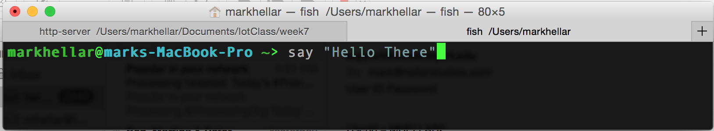
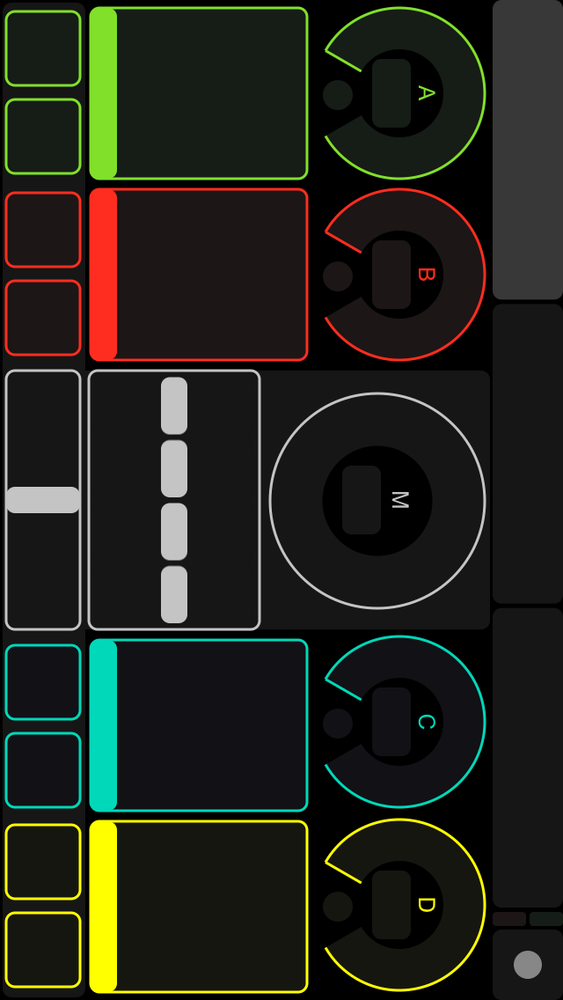

So far, you have learned the JavaScript language and used it within a single environment: the browser. Node.js is a program that allows you to apply your JavaScript skills outside of the browser. With it, you can build anything from simple command-line tools to dynamic HTTP servers.
Slide for today are here:
http://mhellar.github.io/ga_nodeclass/1
Code is here:
http://bit.ly/1ObbrjC
Download It!
http://nodejs.org/download/


The V8 JavaScript Engine is an open source JavaScript engine in the Chrome browser
V8 compiles JavaScript to native machine code before executing it, which runs very fast.
NODE IS ESSENTIALLY V8 minus the browser, WITH SOME ADDITIONS SO THAT YOU CAN USE IT TO WRITE SERVERS.
Node API
I just want to make art!
Sid Lee Dashboard
Do Not Touch
Jürg Lehni - Viktor
You can run node from the command line
Just type node

A Node program in a file
Contents of app.js
/**
* 01 - Getting Started
* Declare a variable, perform some math, output the result
*/
var initialNumber = 0;
var finalNumber = initialNumber + 10;
console.log(finalNumber);
run 'node app.js'
/**
* 01 - Getting Started
* Declare a variable, perform some math, output the result
*/
var initialNumber = 0;
var finalNumber = initialNumber + 10;
console.log(finalNumber);
simple little programs
open /code/1 folder in the terminal
and in sublime text
type 'node app.js'
/**
* 01 - Getting Started
* Declare a variable, perform some math, output the result
*/
var initialNumber = 0;
var finalNumber = initialNumber + 10;
console.log(finalNumber);
type 'node process.js'
/**
* process.js
* Examples of the process object in nodeJS
* Working with directories:
*
* cwd() : current directory
*
*/
console.log("Current directory is: " + process.cwd());
/*
* Host information
*
* arch : Process Architecture
* platform : darwin (OS X), freebsd, linux, sunos or win32
*
*/
console.log("Node is currently running on the " + process.platform
+ " platform on the " + process.arch + " architecture.");
//******************************************************************************//
type 'node argv.js'
/*
* Reading command line arguments:
*
* process.argv contains all command-line arguements
* passed to the node app
*
* The command > node process.js arg1 arg2
* produces:
* 0: node
* 1: /path/to/process.js
* 2: arg1
* 3: arg2
*/
process.argv.forEach(function(val, index, array) {
console.log(index + ': ' + val);
});
type 'node timer.js'
/*
* intervals.js
* Intervals and Timeouts in javascript
*/
//******************************************************************************//
/*
* setInterval(callback, time) : repeats the callback function every *time* ms
* clearInterval(timer) : stops a corresponding setInterval callback
*/
var repeatingFunction = setInterval(function() {
console.log("Ping");
},1000);
//******************************************************************************//
//******************************************************************************//
/*
* setTimeout(callback, time) : delays the callback function for *time* ms
* clearTimeout(timer) : stops a corresponding setTimeout callback
*/

with NodeJS
Open a terminal
Type 'say' + space + "something to say"
type 'node speak.js'
//the child_process library let's us execute command line commands, https://nodejs.org/api/child_process.html
var exec = require('child_process').exec;
//This variable stores the command we want to execute, we are going to use the say command
var say = 'say ';
//let's make a function that speaks
function speak(whatosay){
//speak the string
exec(say + whatosay);
//log it to the console
console.log(whatosay)
}
// call the function
speak("I just do this");
*/
Modify the program, change the voice and what it says.
Save it and then run node app.js
Introduction to callbacks
Node.js® is a JavaScript runtime built on Chrome's V8 JavaScript engine. Node.js uses an event-driven, non-blocking I/O model that makes it lightweight and efficient.
Here is a simple synchronous example, meaning you can read the code top to bottom just like a book:
var myNumber = 1
function addOne() { myNumber++ } // define the function
addOne() // run the function
console.log(myNumber) // logs out 2
Here node is firing off addOne() and console.log(myNumber) at the same time
var fs = require('fs') // require is a special function provided by node
var myNumber = undefined // we don't know what the number is yet since it is stored in a file
function addOne() {
fs.readFile('number.txt', function doneReading(err, fileContents) {
myNumber = parseInt(fileContents)
myNumber++
})
}
addOne()
console.log(myNumber) // logs out undefined -- this line gets run before readFile is done
Because reading from the filesystem take longer that console.log it returns console.log(myNumber) first. This is non-blocking
Why do we get undefined when we log out the number this time? In this code we use the fs.readFile method, which happens to be an asynchronous method. Usually things that have to talk to hard drives or networks will be asynchronous. If they just have to access things in memory or do some work on the CPU they will be synchronous. The reason for this is that I/O is reallyyy reallyyy sloowwww. A ballpark figure would be that talking to a hard drive is about 100,000 times slower than talking to memory (e.g. RAM).
We can fix the code by placing the console.log in the callback.
var fs = require('fs') // require is a special function provided by node
var myNumber = undefined // we don't know what the number is yet since it is stored in a file
function addOne() {
fs.readFile('number.txt', function doneReading(err, fileContents) {
myNumber = parseInt(fileContents)
myNumber++
console.log(myNumber) // Putting the console.log statement here returns the result I want
})
}
addOne()
Node does Input/Output in a way that is asynchronous which lets it handle lots of different things simultaneously. For example, if you go down to a fast food joint and order a cheeseburger they will immediately take your order and then make you wait around until the cheeseburger is ready. In the meantime they can take other orders and start cooking cheeseburgers for other people. Imagine if you had to wait at the register for your cheeseburger, blocking all other people in line from ordering while they cooked your burger! This is called blocking I/O because all I/O (cooking cheeseburgers) happens one at a time. Node, on the other hand, is non-blocking, which means it can cook many cheeseburgers at once.
Homework - read this article
Art of Node: CallbacksA Simple Webserver
// Load the http module to create an http server.
var http = require('http');
// Configure our HTTP server to respond with Hello World to all requests.
var server = http.createServer(function (request, response) {
response.writeHead(200, {"Content-Type": "text/html"});
response.end("\n");
});
// Listen on port 8000, IP defaults to 127.0.0.1
server.listen(8000);
// Put a friendly message on the terminal
console.log("Server running at http://127.0.0.1:8000/");
run 'node basicsrv.js'
A Simple Webserver the returns a random greeting
// Load the http module to create an http server.
var http = require('http');
//create an array 7 greetings
var greeting = ["hello","hi","how are you","sup","yo","what's going on","hey"]
//create a function to get a random greeting
function randGreet(arr){
//generate a random number between 0 - 7
var val = Math.floor((Math.random() * 7) + 0);
//use val to get a random element from the array
return arr[val];
}
// Configure our HTTP server to respond with a random greeting to all requests.
var server = http.createServer(function (request, response) {
response.writeHead(200, {"Content-Type": "text/html; charset=utf-8"});
//return a random greeting
response.end(randGreet(greeting));
});
// Listen on port 8000, IP defaults to 127.0.0.1
server.listen(8000);
// Put a friendly message on the terminal
console.log("Server running at http://127.0.0.1:8000/");
run 'node basicsrv2.js'
Node Package Manager
NPM is an online repository of JavaScript modules, many of which are specifically written for Node. When you install Node on your computer, you also get a program called npm(Node Package Manger), which provides a convenient interface to this repository.
https://www.npmjs.com/
awesome-nodejs
Let's try:
brightnessType: sudo npm install --global brightness-cli
Now Type: brightness 0.5
- Make a new folder called cowsay
- Open the terminal and type 'cd' + SPACE + drag folder onto the terminal
- Type 'npm init'
- Fill out the questions
- Drag the folder on to Sublime text
- Have a look at the package.json file that was created
- Type 'npm install cowsay --save'
- Create a new file in Sublime
- Enter the code below:
- Save as 'index.js' in your new folder
var cowsay = require("cowsay");
console.log(cowsay.say({
text : "I'm a moooodule",
e : "oO",
T : "U "
}));
In the terminal run 'node index.js'
Speaking to node with our phone
Warning: I have not tested this in a group setting
But it is cool and should work fine
If the wifi behaves!
Set your phone to wifi 'grayareatheater'
Open your system preferences, the click the network icon


- Make a new folder called osc
- Open the terminal and type 'cd' + SPACE + drag folder onto the terminal
- Type 'npm init'
- Fill out the questions
- Drag the folder on to Sublime text
- Type 'npm install node-osc --save'
- Create a new file in Sublime
- Enter the code below:
- Change the port to your phones outgoing port and ip to phones IP
- Save as 'index.js' in your new folder
var osc = require('node-osc');
var oscServer = new osc.Server(3333, '0.0.0.0');
oscServer.on("message", function(msg, rinfo) {
console.log("TUIO message:");
console.log(msg);
});